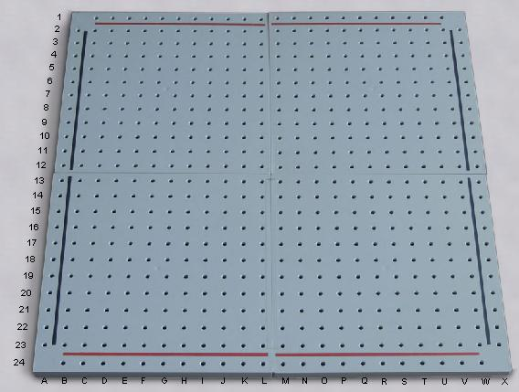
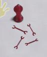
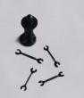
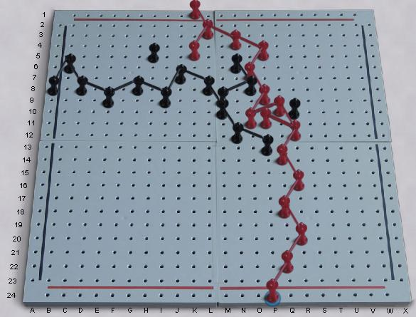
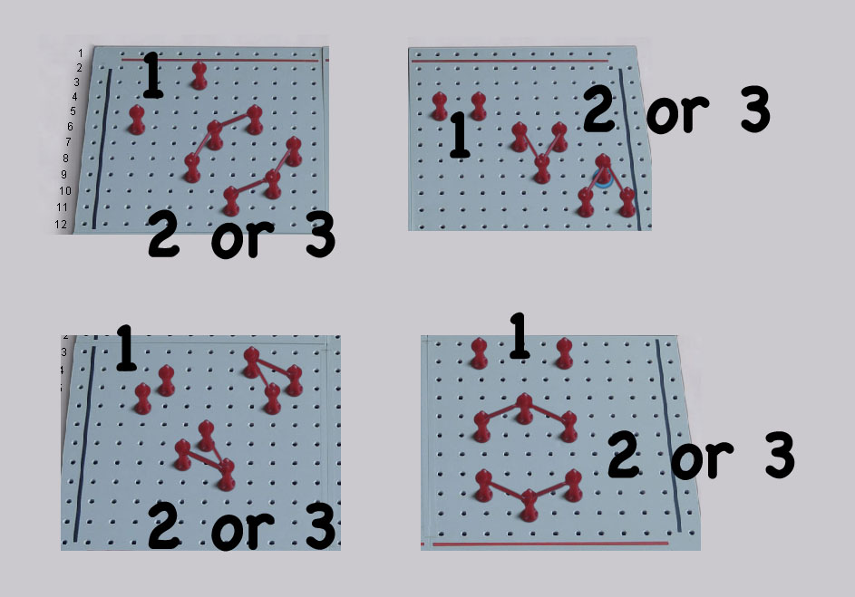

|
|
|
| The board is a 24x24 grid of holes, minus the corner holes. The rows around the edges of the board are referred to as border rows. The red border rows are along the "top" and "bottom," and the black border rows are along the left and right edges. (Some sets may use different colors.) Each player has a collection of pegs and links of their color. The board is empty at the start. Red moves first. On your turn you may: 1. Place one peg of your color in any vacant hole EXCEPT you may not play in either of your opponent's border rows. 2. Add or Remove as many legal links between pegs of your color as you wish. A link is legal when the two pegs are at opposite corners of a six-hole rectangle (like a knight's move in chess), and no other link crosses the linking path, not even one of your own. After Red places the first peg on the board, the opponent has the option to either respond normally as Black, or swap sides. If sides are swapped, the player who moved first as Red is now Black, and makes the next move. Sides may be swapped only once per game. If the 2nd player chooses not to swap after Red's first move, then sides may not be swapped at all that game. (The purpose of this rule is to reduce the first move advantage, making the game more fair.) The object is to connect a peg in one of your border rows to a peg in your other border row, with a continuous chain of linked pegs. If neither side can achieve this, the game is a draw. |   |
Sample Game | Simple connection setups. |
| E-Mail: | Go to BoardSpace.net home page |